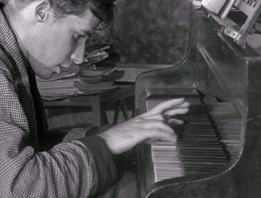

Glenn Gould aan de piano
dinsdag 21 september 2004 | Kultuur
In de catacomben van een van mijn harde schijven heb ik dit korte, doch intrigerende videofragment (16Mb, Mpg) teruggevonden van de jonge Glenn Gould (1932 – 1982) aan de piano. Geen flauw idee waar het vandaan komt, maar ik vond het toch de moeite om hier eens te posten.
